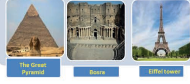
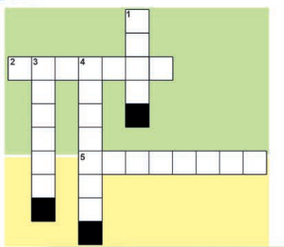
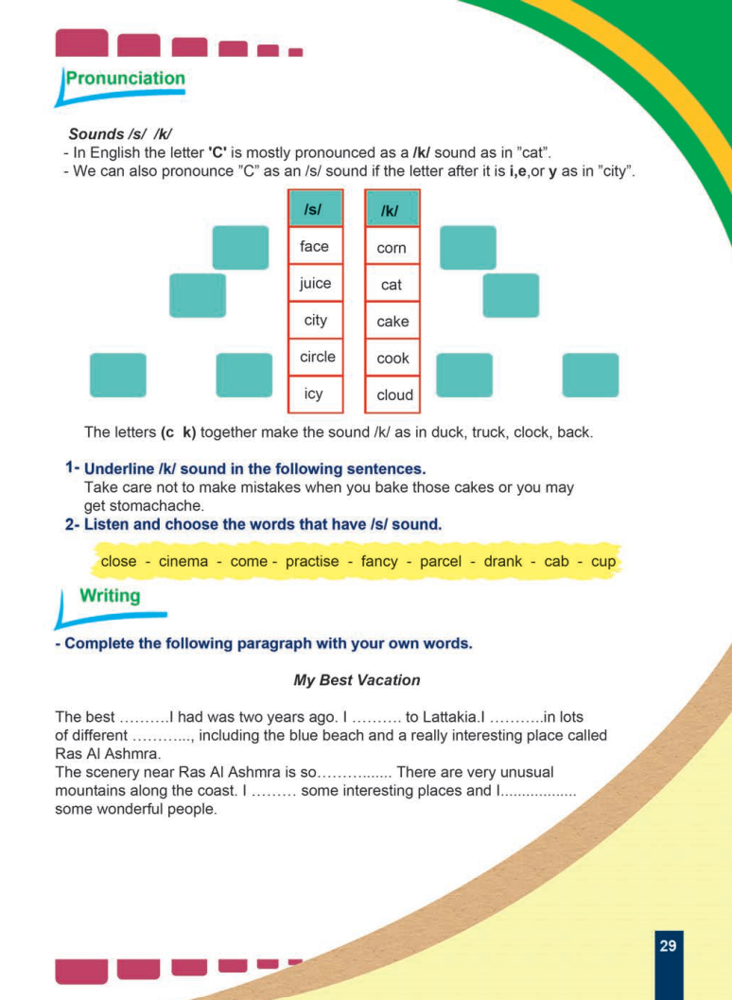
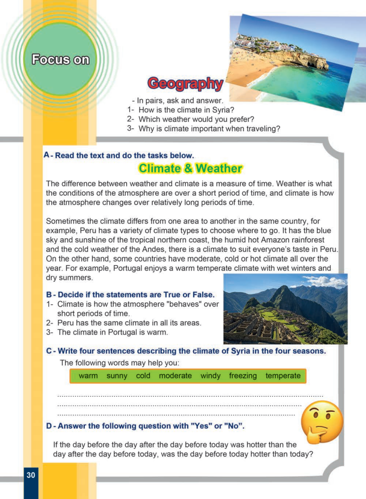
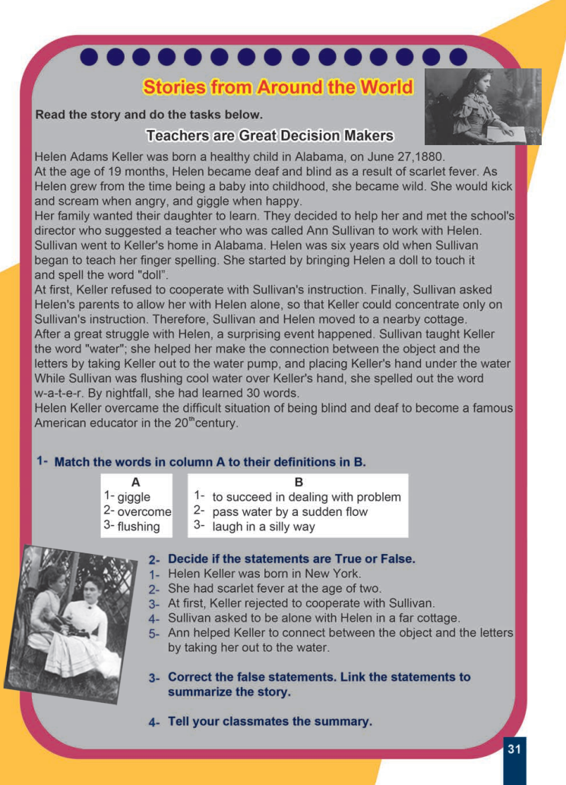
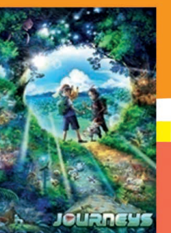
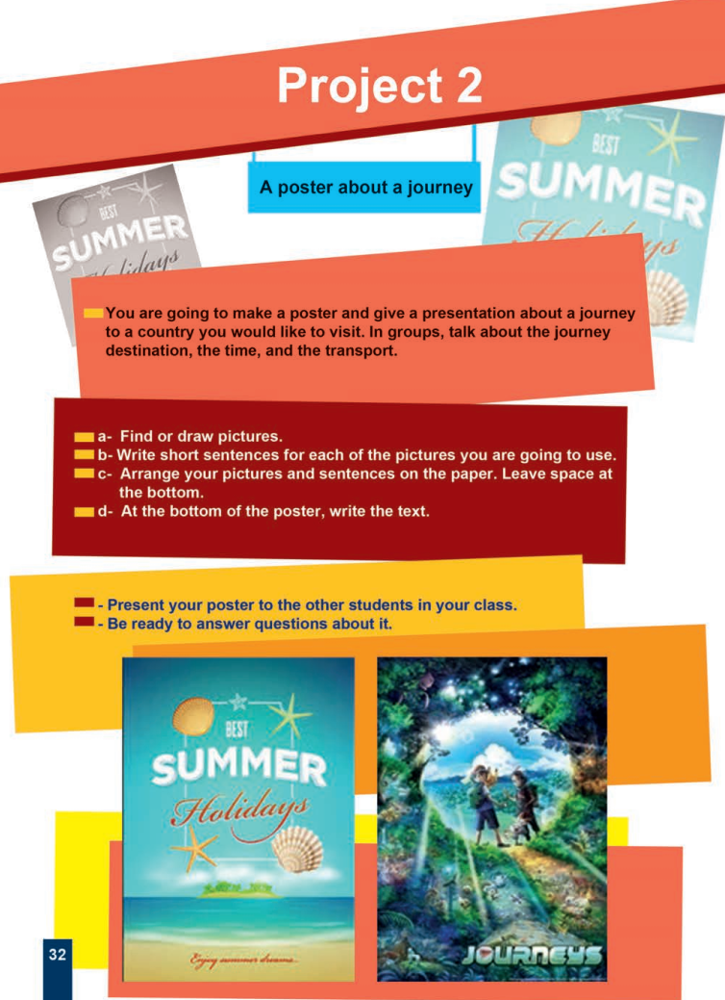

Student’s Book · Interesting Destinations
Printed pages 26–32 · images 1–7 only. Speaking, the Iguazu Falls reading, key words, a crossword, past perfect and reported speech, hotel listening, pronunciation, writing, climate reading, the Helen Keller story and Project 2. Your responses stay in this browser; use each activity’s reset to clear it.
Page 26 · Unit opener and Speaking
Unit 4 · Interesting Destinations
Unit plan
- Speaking: ask and answer some questions about some monuments
- Reading: Iguazu Falls
- Vocabulary: related to journeys
- Grammar: revision of past perfect and reported speech
- Pronunciation: sound /s/
- Listening: a dialogue about check-in at a hotel room
- Writing: completing a paragraph
Speaking
- Look at these pictures and discuss with your partner the following questions:

The Great Pyramid · Bosra · Eiffel tower
Discussion questions with no printed answers; question 1 expects the three cities as general knowledge. Nothing here is scored — write your own ideas and speak with a partner.
Page 26 · Reading: Iguazu Falls
Read the following text and do the tasks below.
Iguazu Falls
Iguazu Falls are located on the Iguazu River and an area shared by Argentina, Brazil and Paraguay, so it is a three-country border zone.You can travel to the city Foz do Iguacu on the Brazilian side, or the town Puerto Iguazu, on the Argentine side. Both cities have airports, bus stations and rental car agencies, so you can choose to go by plane, bus or car.
Iguazu National Park offers many activities to make your adventure unforgettable.You can experience the waterfalls in different ways; go on a trekking tour, take a helicopter ride above the Iguazu Falls, go canoeing in the Iguazu river.
The World Tour Agency said that many people had visited the Iguazu Falls.They told us that the Falls had been so beautiful and could be ranked as one of the ten best places in the world. Tourists said that the Falls they had seen were unique landmarks.
They slso said that some tourists had found the Falls wonderful with their sub-tropical climate and rains all year. Others said that fresh fruit had been one of the key delights for travellers besides a variety of dishes such as black beans stew, seafood stew and mixed grilled meats. They added that the food at the open market had been good and cheap that tourists decided to have all their meals there.
Travel experts consider that Iguazu is a magnificent holiday destination for adventure and nature lovers.
Transcribed exactly as printed, including the missing spaces in “zone.You”, “unforgettable.You” and “Falls.They”, the typo “They slso said”, and “good and cheap that tourists decided” (no “so”). These details are retained, not silently repaired.
Original Student’s Book page 26 · image 1
Page 27 · Key words and Task A: True or False
Key words
| Word / phrase | Meaning printed in the book |
|---|---|
| located | situated |
| rental car | a car that you pay money to use for a period of time |
| trekking | a long hard walk lasting several days specially in mountains |
| stew | a hot meal made by cooking meat and vegetables in a liquid |
| grilled | cooked over a very strong heat |
| expert | someone who has a special skill or knowledge of a subject |
| magnificent | very good or beautiful |
A- Decide if these sentences are True or False.
Each answer follows the reading on page 26; the guidance names the line that decides it.
Page 27 · Vocabulary: Complete the puzzle
- Complete the puzzle with words from the text.

Across
- 2- cooked over a very strong heat.
- 5- a long hard walk lasting several days specially in mountains.
Down
- 1- a hot meal made by cooking meat and vegetables in a liquid.
- 3- a car that you pay money to use for a short period of time
- 4- situated.
The printed grid gives six squares for Down 3, so it fits “rental”, while the key-words box on this page prints the headword “rental car” and the clue says “a short period of time”. The grid is reproduced unchanged; both “rental” and “rental car” are accepted here.
Original Student’s Book page 27 · image 2
Page 27 · Grammar: Revision of Past Perfect Tense
Revision of Past Perfect Tense
Answer the questions in the table using the past perfect tense as in the first two examples.
| Questions | Answers |
|---|---|
| Why was Mary tired this morning? | Because she had stayed up until 3 a.m. |
| Why wasn’t Paul hungry at lunch? | Because he had had a late breakfast. |
The printed table gives no answers for items 1–5. Write your own answer in the past perfect (Because + subject + had + past participle), following the two printed examples. These are saved for teacher review, not scored against one string.
Original Student’s Book page 27 · image 2
Page 28 · Grammar A: Complete the sentences from the text above
A- Complete the sentences from the text above.
The gaps repeat the reported-speech sentences of the Iguazu reading on page 26. “said that / said”, “told us / told” and “added that / added” are all accepted.
Page 28 · Grammar B: Select the correct form
B- Select the correct form.
Original Student’s Book page 28 · image 3
Page 28 · Listening: Check-in at a hotel room
A- Listen to a dialogue about "Check-in at a hotel room". Then do the following tasks.
Audio required; the recording was not supplied. The printed tasks below are kept answerable for classroom practice, but they carry no key and are not scored. No transcript has been invented.
B- Decide if the sentences are True/T or False/F.
No recording or transcript was supplied for this lesson, so tasks B and C keep their printed choices but are never marked and no answer key is shown. Ask a teacher to use the official recording.
Original Student’s Book page 28 · image 3
Page 29 · Pronunciation: Sounds /s/ and /k/
Sounds /s/ /k/
- In English the letter 'C' is mostly pronounced as a /k/ sound as in "cat".
- We can also pronounce "C" as an /s/ sound if the letter after it is i,e,or y as in "city".
| /s/ | /k/ |
|---|---|
| face | corn |
| juice | cat |
| city | cake |
| circle | cook |
| icy | cloud |
The letters (c k) together make the sound /k/ as in duck, truck, clock, back.
1- Underline /k/ sound in the following sentences.
Take care not to make mistakes when you bake those cakes or you may get stomachache.
The printed instruction says “sentences” but only one sentence is printed. This is written practice rather than underlining; guidance lists the words that contain the /k/ sound and is derived, not an official key. Task 2 needs the recording, so it is not scored.
Original Student’s Book page 29 · image 4
Open the unchanged source image in a new tab

Page 29 · Writing: My Best Vacation
- Complete the following paragraph with your own words.
My Best Vacation
The book asks for your own words, so no single answer exists and nothing is scored. The printed spellings “Ras Al Ashmra” and the missing space in “Lattakia.I” are retained exactly.
Original Student’s Book page 29 · image 4
Page 30 · Focus on: Geography
Geography
- In pairs, ask and answer.
Pair discussion with no printed answers; your replies are saved for review, not scored.
A- Read the text and do the tasks below.
Climate & Weather
The difference between weather and climate is a measure of time. Weather is what the conditions of the atmosphere are over a short period of time, and climate is how the atmosphere changes over relatively long periods of time.
Sometimes the climate differs from one area to another in the same country, for example, Peru has a variety of climate types to choose where to go. It has the blue sky and sunshine of the tropical northern coast, the humid hot Amazon rainforest and the cold weather of the Andes, there is a climate to suit everyone’s taste in Peru. On the other hand, some countries have moderate, cold or hot climate all over the year. For example, Portugal enjoys a warm temperate climate with wet winters and dry summers.
Original Student’s Book page 30 · image 5
Open the unchanged source image in a new tab

Page 30 · Tasks B, C and D: True or False, seasons and a puzzle
B - Decide if the statements are True or False.
C- Write four sentences describing the climate of Syria in the four seasons.
The following words may help you:
warm · sunny · cold · moderate · windy · freezing · temperate
D- Answer the following question with "Yes" or "No".
If the day before the day after the day before today was hotter than the day after the day before today, was the day before today hotter than today?
Original Student’s Book page 30 · image 5
Page 31 · Stories from Around the World: Teachers are Great Decision Makers
Teachers are Great Decision Makers
Read the story and do the tasks below.
Helen Adams Keller was born a healthy child in Alabama, on June 27,1880.
At the age of 19 months, Helen became deaf and blind as a result of scarlet fever. As Helen grew from the time being a baby into childhood, she became wild. She would kick and scream when angry, and giggle when happy.
Her family wanted their daughter to learn. They decided to help her and met the school's director who suggested a teacher who was called Ann Sullivan to work with Helen. Sullivan went to Keller's home in Alabama. Helen was six years old when Sullivan began to teach her finger spelling. She started by bringing Helen a doll to touch it and spell the word "doll".
At first, Keller refused to cooperate with Sullivan's instruction. Finally, Sullivan asked Helen's parents to allow her with Helen alone, so that Keller could concentrate only on Sullivan's instruction. Therefore, Sullivan and Helen moved to a nearby cottage.
After a great struggle with Helen, a surprising event happened. Sullivan taught Keller the word "water"; she helped her make the connection between the object and the letters by taking Keller out to the water pump, and placing Keller's hand under the water While Sullivan was flushing cool water over Keller's hand, she spelled out the word w-a-t-e-r. By nightfall, she had learned 30 words.
Helen Keller overcame the difficult situation of being blind and deaf to become a famous American educator in the 20thcentury.
Transcribed as printed, including “June 27,1880”, the missing stop in “under the water While” and “20thcentury” (no space after the superscript). These are retained, not silently repaired.
Original Student’s Book page 31 · image 6
Open the unchanged source image in a new tab

Page 31 · Tasks 1 and 2: Match and True or False
1- Match the words in column A to their definitions in B.
| A | B |
|---|---|
| 1- giggle | 1- to succeed in dealing with problem |
| 2- overcome | 2- pass water by a sudden flow |
| 3- flushing | 3- laugh in a silly way |
2- Decide if the statements are True or False.
Original Student’s Book page 31 · image 6
Page 31 · Tasks 3 and 4: Correct and summarize
3- Correct the false statements. Link the statements to summarize the story.
4- Tell your classmates the summary.
Open writing: statements 1, 2 and 4 from task 2 are the false ones, but the book prints no model correction and no model summary. Your work is saved for teacher review, not scored.
Original Student’s Book page 31 · image 6
Page 32 · Project 2: A poster about a journey
Project 2
A poster about a journey
You are going to make a poster and give a presentation about a journey to a country you would like to visit. In groups, talk about the journey destination, the time, and the transport.
a- Find or draw pictures.
b- Write short sentences for each of the pictures you are going to use.
c- Arrange your pictures and sentences on the paper. Leave space at the bottom.
d- At the bottom of the poster, write the text.
- Present your poster to the other students in your class.
- Be ready to answer questions about it.
A class project with no printed answers: build the poster on paper and present it in class. Nothing on this step is scored on screen.

Original Student’s Book page 32 · image 7
Open the unchanged source image in a new tab
